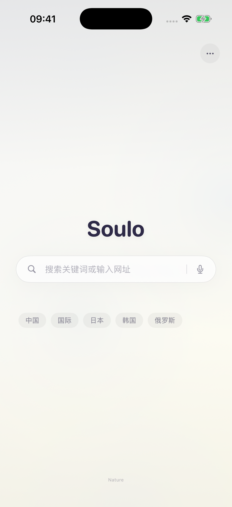
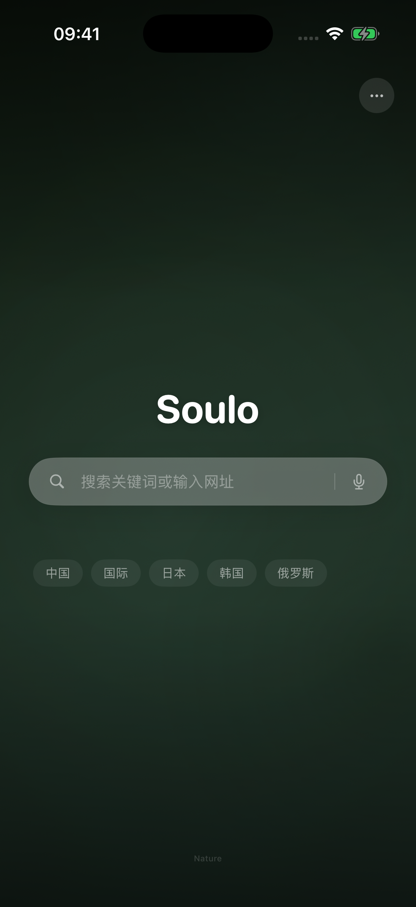

多平台搜索
关键词只输入一次，快速切换搜索、视频、社区与 AI 平台，也支持添加自己的搜索源。
为 iPhone 打造的多平台搜索浏览器
在 40+ 搜索、视频、社区和 AI 平台间快速切换。
广告拦截、下载管理、网页翻译，常用功能一步即达。


从搜索到阅读，把常用功能放在顺手的地方。
关键词只输入一次，快速切换搜索、视频、社区与 AI 平台，也支持添加自己的搜索源。
拦截广告请求、隐藏广告占位，支持订阅规则和站点例外，让浏览更清爽。
发现网页中的可下载资源，查看下载进度，管理、分享和打开已保存的文件。
选择目标语言，翻译当前网页；还可保存网页长截图或导出 PDF，方便随时查看。
按需安装用户脚本，自定义工具栏、首页壁纸和搜索平台，让浏览器适合你的习惯。
历史与收藏默认保存在设备上。支持无痕浏览，也可以随时清除浏览记录与网站数据。